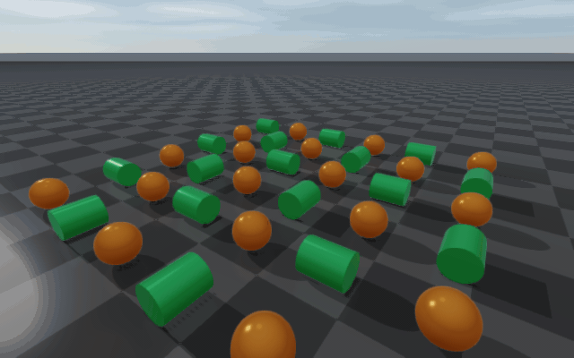

Rayrai Example: Rolling And Spinning Friction
Overview
This example visualises native rolling and spinning friction on a grid of spheres and cylinders, all spawned with initial linear and angular velocity. As bodies dissipate energy through the new friction modes they slow, come to rest, and are recoloured to indicate sleeping; the demo loops on a fixed cadence so the build-up and decay are easy to compare.
The matching renderer-side reference image (smaller grid, captured headlessly) is regenerated as part of the documentation build:
{kind=link}

Binary
Installed executable: rayrai_rolling_spinning_friction.
Run
Run the installed executable directly:
<raisim-install>/bin/rayrai_rolling_spinning_friction
On Windows, use rayrai_rolling_spinning_friction.exe. The example uses
the in-process rayrai renderer and does not need a TCP viewer.
Command-line knobs:
rayrai_rolling_spinning_friction \
--grid=12 \
--steps=2500 \
--steps-per-frame=16 \
--hold-frames=120
--grid— N × N body grid (default10). Larger values exercise the solver harder; the GIF in this page uses--grid=6for clarity.--steps— physics steps per cycle (default2500). One cycle is one full reset → run-until-rest sequence.--steps-per-frame— physics steps per render frame (default16). Higher values speed up the visible motion at the cost of frame-to-frame smoothness.--hold-frames— frames to wait after each cycle before resetting (default120).
How it works
The rolling/spinning friction comes from the material-pair property set
up in main():
world->setMaterialPairProp("ground", "body",
1.0, // dynamic friction
0.0, // restitution
0.0, // restitution threshold
1.0, // static friction
1e-3, // static-friction threshold velocity
0.12, // rolling friction (mu_r)
0.08); // spinning friction (mu_spin)
That seventh and eighth arguments are the new rollingFriction and
spinningFriction coefficients introduced in v2.3.0. Both default to
zero in every other setMaterialPairProp overload, so existing scenes
behave exactly as before; opting into them switches the solver onto the
extended path for that pair. See Material System for the full
contact-impulse derivation.
The scene is built once at startup:
A
checkerboard-textured ground plane with thegroundmaterial.An
N × Ngrid of unit-mass primitives alternating sphere/cylinder by checker pattern, all in thebodymaterial. Cylinders are oriented so that the initial angular velocity rolls them along the floor instead of spinning in place; spheres receive linear + angular velocity in two axes.Sleeping is enabled with mild thresholds (
setSleepingParameters(0.012, 0.03, 25)), so bodies that come to rest stop integrating and switch to a blue appearance.
Each rendered frame integrates --steps-per-frame physics steps,
updates the sleep appearance, and prints aggregate statistics:
while (!app.quit) {
app.processEvents();
if (app.quit) break;
if (stepInCycle < cycleSteps) {
for (int i = 0; i < stepsPerFrame; ++i) {
world->integrate();
lastContacts = world->getContactProblem()->size();
contactTotal += lastContacts;
++stepInCycle;
}
} else if (++heldFrames >= holdFrames) {
resetDemo(*world, bodies, grid); // re-fire the cycle
stepInCycle = 0;
heldFrames = 0;
}
updateSleepingAppearance(*world, bodies);
computeMeanSpeeds(bodies, meanLinearSpeed, meanAngularSpeed);
app.beginFrame();
app.renderViewer(*viewer);
// ... ImGui overlay with step / contacts / speeds ...
app.endFrame();
}
What to look for
Cylinders roll across the floor instead of skidding. With rolling friction off, the cylinders would keep spinning indefinitely after their linear motion decayed. Rolling friction couples angular and linear energy and brings them down together.
Spheres lose spin after stopping translation. The spin component doesn’t decouple from the floor — spinning friction extracts torque about the contact normal until the body is fully at rest.
Sleeping bodies turn blue. RaiSim’s sleep detector fires when the averaged velocity drops below the configured thresholds; sleeping bodies skip integration and stay on the cheaper path until the next cycle reset.
Average contact count and mean speeds are shown in the ImGui overlay so you can watch energy dissipate over the cycle.
Full source
This is the complete example source, identical to the installed binary:
1#include <algorithm>
2#include <cstdlib>
3#include <memory>
4#include <string>
5#include <vector>
6
7#include <glm/glm.hpp>
8
9#include "rayrai/example_common.hpp"
10#include "rayrai_example_compat.hpp"
11#include "raisim/World.hpp"
12
13namespace {
14
15struct DemoBody {
16 raisim::SingleBodyObject* object = nullptr;
17 std::string activeAppearance;
18 bool sleeping = false;
19 bool sphereShape = false;
20 int x = 0;
21 int y = 0;
22};
23
24int readIntArg(int argc, char** argv, const char* name, int fallback) {
25 const std::string prefix = std::string(name) + "=";
26 for (int i = 1; i < argc; ++i) {
27 const std::string arg(argv[i]);
28 if (arg == name && i + 1 < argc)
29 return std::max(1, std::atoi(argv[++i]));
30 if (arg.rfind(prefix, 0) == 0)
31 return std::max(1, std::atoi(arg.c_str() + prefix.size()));
32 }
33 return fallback;
34}
35
36void resetBody(raisim::World& world, DemoBody& body, int grid) {
37 const double spacing = 1.1;
38 const double origin = -0.5 * spacing * double(grid - 1);
39 const int x = body.x;
40 const int y = body.y;
41
42 if (body.sphereShape) {
43 body.object->setPosition(origin + spacing * x, origin + spacing * y, 0.25);
44 body.object->setOrientation(1.0, 0.0, 0.0, 0.0);
45 body.object->setVelocity(1.7 + 0.08 * x, 0.4 + 0.05 * y, 0.0, 0.0, -11.0, 18.0);
46 } else if ((x & 1) == 0) {
47 // Cylinder axis lies along world X, so angular velocity about X visibly rolls it along Y.
48 body.object->setOrientation(0.7071067812, 0.0, 0.7071067812, 0.0);
49 body.object->setPosition(origin + spacing * x, origin + spacing * y, 0.22);
50 body.object->setVelocity(0.15 + 0.04 * x, 1.9 + 0.07 * y, 0.0, 14.0, 0.0, 0.0);
51 } else {
52 // Cylinder axis lies along world Y, so angular velocity about Y visibly rolls it along X.
53 body.object->setOrientation(0.7071067812, -0.7071067812, 0.0, 0.0);
54 body.object->setPosition(origin + spacing * x, origin + spacing * y, 0.22);
55 body.object->setVelocity(1.9 + 0.07 * x, 0.15 + 0.04 * y, 0.0, 0.0, -14.0, 0.0);
56 }
57
58 body.sleeping = false;
59 body.object->setAppearance(body.activeAppearance);
60 world.wakeObject(body.object);
61}
62
63std::vector<DemoBody> createBodies(raisim::World& world, int grid) {
64 std::vector<DemoBody> bodies;
65 bodies.reserve(static_cast<size_t>(grid * grid));
66
67 for (int y = 0; y < grid; ++y) {
68 for (int x = 0; x < grid; ++x) {
69 const bool sphereShape = ((x + y) & 1) == 0;
70 DemoBody body;
71 body.sphereShape = sphereShape;
72 body.x = x;
73 body.y = y;
74 body.activeAppearance = sphereShape ? "0.95, 0.42, 0.12, 1.0" : "0.15, 0.70, 0.28, 1.0";
75 if (sphereShape) {
76 body.object = world.addSphere(0.25, 1.0, "body");
77 } else {
78 body.object = world.addCylinder(0.22, 0.55, 1.0, "body");
79 }
80 body.object->setAppearance(body.activeAppearance);
81 bodies.push_back(body);
82 resetBody(world, bodies.back(), grid);
83 }
84 }
85
86 return bodies;
87}
88
89void resetDemo(raisim::World& world, std::vector<DemoBody>& bodies, int grid) {
90 world.setWorldTime(0.0);
91 for (auto& body : bodies)
92 resetBody(world, body, grid);
93 world.wakeAll();
94}
95
96void updateSleepingAppearance(raisim::World& world, std::vector<DemoBody>& bodies) {
97 for (auto& body : bodies) {
98 const bool sleeping = world.isObjectSleeping(body.object);
99 if (sleeping != body.sleeping) {
100 body.object->setAppearance(sleeping ? "0.20, 0.55, 1.00, 1.0" : body.activeAppearance);
101 body.sleeping = sleeping;
102 }
103 }
104}
105
106void computeMeanSpeeds(const std::vector<DemoBody>& bodies, double& linearSpeed, double& angularSpeed) {
107 linearSpeed = 0.0;
108 angularSpeed = 0.0;
109 if (bodies.empty())
110 return;
111
112 for (const auto& body : bodies) {
113 linearSpeed += body.object->getLinearVelocity().norm();
114 angularSpeed += body.object->getAngularVelocity().norm();
115 }
116
117 linearSpeed /= double(bodies.size());
118 angularSpeed /= double(bodies.size());
119}
120
121} // namespace
122
123int main(int argc, char* argv[]) {
124 const int grid = readIntArg(argc, argv, "--grid", 10);
125 const int cycleSteps = readIntArg(argc, argv, "--steps", 2500);
126 const int stepsPerFrame = readIntArg(argc, argv, "--steps-per-frame", 16);
127 const int holdFrames = readIntArg(argc, argv, "--hold-frames", 120);
128
129 ExampleApp app;
130 if (!app.init("rayrai_rolling_spinning_friction", 1280, 720))
131 return -1;
132
133 auto world = std::make_shared<raisim::World>();
134 world->setTimeStep(0.001);
135 world->setERP(0.0, 0.0);
136 world->setContactSolverParam(1.0, 1.0, 1.0, 120, 1e-10);
137 world->setGravity({0.0, 0.0, -9.81});
138 world->setSleepingEnabled(true);
139 world->setSleepingParameters(0.012, 0.03, 25);
140 auto* ground = world->addGround(0.0, "ground");
141 ground->setAppearance("checkerboard");
142 world->setMaterialPairProp("ground",
143 "body",
144 1.0,
145 0.0,
146 0.0,
147 1.0,
148 1e-3,
149 0.12,
150 0.08);
151
152 std::vector<DemoBody> bodies = createBodies(*world, grid);
153
154 auto viewer = std::make_shared<raisin::RayraiWindow>(world, 1280, 720);
155 viewer->setRenderQualitySettings(raisin::RayraiWindow::defaultRenderQualitySettings(
156 raisin::RayraiWindow::RenderQualityPreset::Balanced));
157 raisim_examples::setRayraiBackgroundColorRgb255(*viewer, {24, 26, 30, 255});
158 raisim_examples::addRayraiBasicSceneLights(*viewer);
159
160 auto& camera = viewer->getCamera();
161 camera.position = glm::vec3(6.0f, -8.5f, 5.0f);
162 camera.target = glm::vec3(0.0f, 0.0f, 0.25f);
163 camera.yaw = 125.0f;
164 camera.pitch = -31.0f;
165 camera.zoom = 42.0f;
166 camera.zNear = 0.03f;
167 camera.zFar = 35.0f;
168 camera.setCameraFixedTarget(true);
169 camera.setCameraFixedDistance(true);
170 camera.update(false);
171
172 int stepInCycle = 0;
173 int heldFrames = 0;
174 std::size_t contactTotal = 0;
175 std::size_t lastContacts = 0;
176 double meanLinearSpeed = 0.0;
177 double meanAngularSpeed = 0.0;
178
179 while (!app.quit) {
180 app.processEvents();
181 if (app.quit)
182 break;
183
184 if (stepInCycle < cycleSteps) {
185 const int frameSteps = std::min(stepsPerFrame, cycleSteps - stepInCycle);
186 for (int i = 0; i < frameSteps; ++i) {
187 world->integrate();
188 lastContacts = world->getContactProblem()->size();
189 contactTotal += lastContacts;
190 ++stepInCycle;
191 }
192 heldFrames = 0;
193 } else if (++heldFrames >= holdFrames) {
194 resetDemo(*world, bodies, grid);
195 stepInCycle = 0;
196 heldFrames = 0;
197 contactTotal = 0;
198 lastContacts = 0;
199 }
200
201 updateSleepingAppearance(*world, bodies);
202 computeMeanSpeeds(bodies, meanLinearSpeed, meanAngularSpeed);
203
204 app.beginFrame();
205 app.renderViewer(*viewer);
206
207 ImGui::SetNextWindowPos(ImVec2(12, 12), ImGuiCond_Always);
208 ImGui::SetNextWindowBgAlpha(0.72f);
209 ImGui::Begin("Rolling friction", nullptr,
210 ImGuiWindowFlags_NoResize | ImGuiWindowFlags_AlwaysAutoResize |
211 ImGuiWindowFlags_NoCollapse);
212 ImGui::Text("step %d / %d", stepInCycle, cycleSteps);
213 ImGui::Text("bodies: %zu", bodies.size());
214 ImGui::Text("contacts: %zu", lastContacts);
215 ImGui::Text("average contacts: %.2f",
216 stepInCycle > 0 ? double(contactTotal) / double(stepInCycle) : 0.0);
217 ImGui::Text("mean linear speed: %.3f m/s", meanLinearSpeed);
218 ImGui::Text("mean angular speed: %.3f rad/s", meanAngularSpeed);
219 ImGui::End();
220
221 app.endFrame();
222 }
223
224 viewer.reset();
225 app.shutdown();
226 return 0;
227}